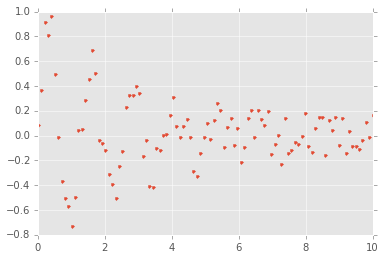
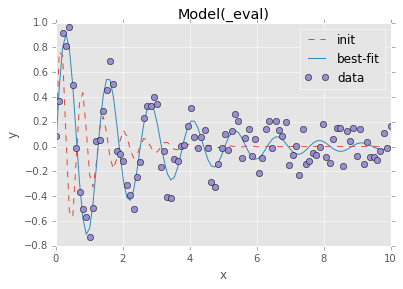
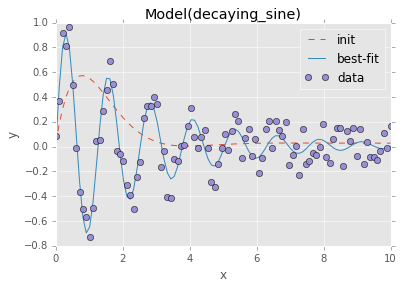

%matplotlib inline
from pprint import pprint
import matplotlib.pyplot as plt
import numpy as np
import numpy.random as npr
import lmfit
plt.style.use("ggplot")# Generate data
x = np.linspace(0, 10, 100)
y = np.sin(5*x)*np.exp(-x/2.5)
y += npr.choice([-1, 1], size=y.shape)*npr.random(size=y.shape)/5
plt.plot(x, y, '.')
plt.savefig("../img/lmfit/data.svg", bbox_inches="tight")
# Create the model and guess parameters
model = lmfit.models.ExpressionModel("ampl * sin((x - x0)*freq) * exp(-x/tau) + offset")
params = model.make_params(ampl=1, x0=0, freq=10, tau=1, offset=0)
params["offset"].set(vary=False)# Fit and visually inspect
fit = model.fit(y, params, x=x)
fit.plot_fit()
plt.savefig("../img/lmfit/fit-expression-model.svg", bbox_inches="tight")
print(fit.fit_report())[[Model]]
Model(_eval)
[[Fit Statistics]]
# function evals = 122
# data points = 100
# variables = 4
chi-square = 1.369
reduced chi-square = 0.014
Akaike info crit = -417.018
Bayesian info crit = -406.598
[[Variables]]
freq: 4.97964137 +/- 0.034454 (0.69%) (init= 10)
tau: 2.60560348 +/- 0.246606 (9.46%) (init= 1)
offset: 0 (fixed)
ampl: 1.02045744 +/- 0.068242 (6.69%) (init= 1)
x0: 0.00020489 +/- 0.012188 (5948.74%) (init= 0)
[[Correlations]] (unreported correlations are < 0.100)
C(tau, ampl) = -0.720
C(freq, x0) = 0.681
C(ampl, x0) = 0.129
# Example of model subclassing for better reusability
class DecayingSineModel(lmfit.Model):
def __init__(self, *args, **kwargs):
def decaying_sine(x, ampl, offset, freq, x0, tau):
return ampl * np.sin((x - x0)*freq) * np.exp(-x/tau) + offset
super(DecayingSineModel, self).__init__(decaying_sine, *args, **kwargs)
def guess(self, data, **kwargs):
params = self.make_params()
def pset(param, value):
params["%s%s" % (self.prefix, param)].set(value=value)
pset("ampl", np.max(data) - np.min(data))
pset("offset", np.mean(data))
pset("freq", 1)
pset("x0", 0)
pset("tau", 1)
return lmfit.models.update_param_vals(params, self.prefix, **kwargs)model = DecayingSineModel()
params = model.guess(y, x=x)
fit = model.fit(y, params, x=x)fit.plot_fit()
plt.savefig("../img/lmfit/fit-decaying-sine-model.svg", bbox_inches="tight")
print(fit.fit_report())[[Model]]
Model(decaying_sine)
[[Fit Statistics]]
# function evals = 152
# data points = 100
# variables = 5
chi-square = 1.362
reduced chi-square = 0.014
Akaike info crit = -414.513
Bayesian info crit = -401.488
[[Variables]]
ampl: 1.01509806 +/- 0.068642 (6.76%) (init= 1.690452)
offset: 0.00866496 +/- 0.012058 (139.16%) (init= 0.02785899)
freq: 4.98055762 +/- 0.034458 (0.69%) (init= 1)
x0: 0.00051399 +/- 0.012254 (2384.24%) (init= 0)
tau: 2.62045162 +/- 0.250289 (9.55%) (init= 1)
[[Correlations]] (unreported correlations are < 0.100)
C(ampl, tau) = -0.722
C(freq, x0) = 0.681
C(ampl, x0) = 0.124
C(ampl, offset) = -0.110
# Show all parameters and standard error estimates
for key in fit.params:
print(key, "=", fit.params[key].value, "+/-", fit.params[key].stderr)ampl = 1.01509805981 +/- 0.0686424802112
offset = 0.00866496750688 +/- 0.0120582675657
freq = 4.98055762006 +/- 0.0344587866965
x0 = 0.00051399773059 +/- 0.0122549465211
tau = 2.62045162933 +/- 0.250289489618